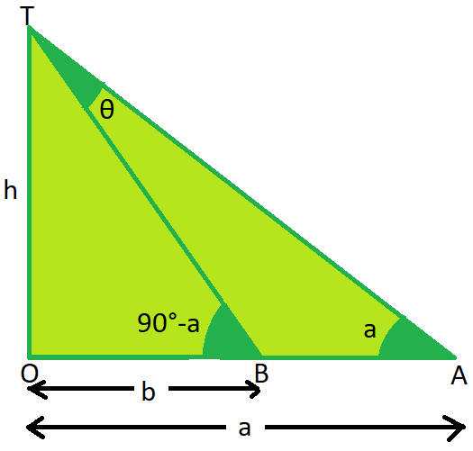

SOLUTION:
Let OT be the tower of height h.
Let O be the base of the tower.
Let A and B be two points on the same line through the base such that OA = a and OB = b.  Because the angles at A and B are complementary, so let ∠TAO = a and therefore ∠TBO = 90°-a
IN ∆AOT,
tan a = OT/OA = h/a ......(i)
In ∆BOT,
tan(90°-a)=OT/OB = h/b or cot a = h/b ...... (ii)
Multiplying (i) and (ii) we have,
→ tan a cot a = (h/b)(h/a)
→(tan a)(1/ tan b)= h2/ab
→ 1 = h2/ab
→ h2= ab
→ h = √ab
2)An aeroplane flying horizontally at a height of 2500 m above the ground is observed at an elevation of 60° and after 15 seconds, the elevation is observed to be 30°. Find the speed of the aeroplane in km/hr.
SOLUTION:
Initially, the aeroplane is at A and after 15 seconds its position is at C.
 ∴ AC is the distance covered in 15 sec.
∴ AC is the distance covered in 15 sec.Also, ∠AOB=60° and ∠COD=30°
AB=CD=2500 m
In right ∆ ABO,
OB/AB=COT 60° → OB= 2500/√3......(i)
In right ∆ CDO,
OD/CD=COT 30° → OD=2500√3......(ii)
From (i) and (ii),
BD=OD-OB=2500√3-2500/√3 = 2500(√3-1/√3)
BD= 2500(3-1/√3) = [(2500)(2)(√3)]/3 = 5000(1.732)/3
=8660/3 m.
8660/3 m is te distance covered in 5 sec.
∴Speed= 8660/3*15 m/s = (8660/3*15*1000)60*60 km/hr
= 692.8 km/hr
∴ Speed of the aeroplane is 692.8 km/hr